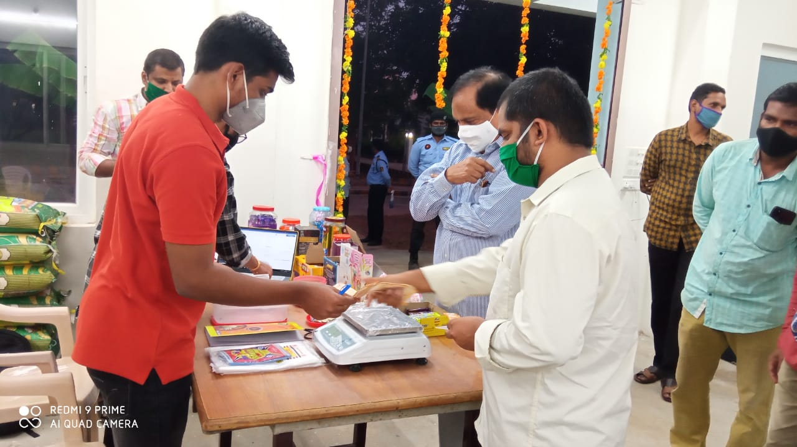

About Us
Helping Hands are better than Praying lips...Helping Hands society has flourished since 2009 by helping many necessitous people with the support of students and faculty .Helping Hands is a student welfare committee in RGUKT-Nuzvid,a A.P state government university which provide financial support for medical needs and surgeries to the needy people.Helping Hands provide daily needs to the students to meet minimum requirements,Travel expenses and many more services.

"We rise by lifting others"
Helping Hands has been driving force in instilling a sense of leadership and social responsibility among students.Helping Hands organizes effectively to find necessitous people and approach them in specific way.
Helping Hands organization is categorised into four departments.
- Internal care Department:It meets daily needs of people including travelling expenses and providing washing machies to physically disabled people.
- Health Care Department:It is the main focussed department which saves many lives in and out of campus,It provides medical camps and distribute free medicines for people.
- Public Relation Departmeny:It focuses on raising outside funding and conducting community-level service activities.
- Finance Department:It provides complete accurate information about how funds are raised and utilized to help needy.
Helping Hands follows specific strategy by electing Helping Hands Representatives(HR's),Executive Committee members of their respective branch.A total of 250 active volunteers are responsible for proper functioning of daily affairs.
Every volunteer of HH organisation plays an eminent role in extending our services to the impoverished ones.The main fund raising source is collecting money from students atleat 1 rupee from each student.collecting used note books,news papers and plastic scrap.stalls and raising money from phylanthropic invividuals are other ways.A little help,A little kindness,It's not much but helps others and goes Farther than you think.Helping Hands the cause of many surgeries,providing necessitous has long way to go and ever thankful to the basic idea of shiva which leads to this flourished organization.